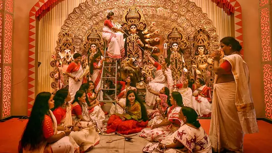
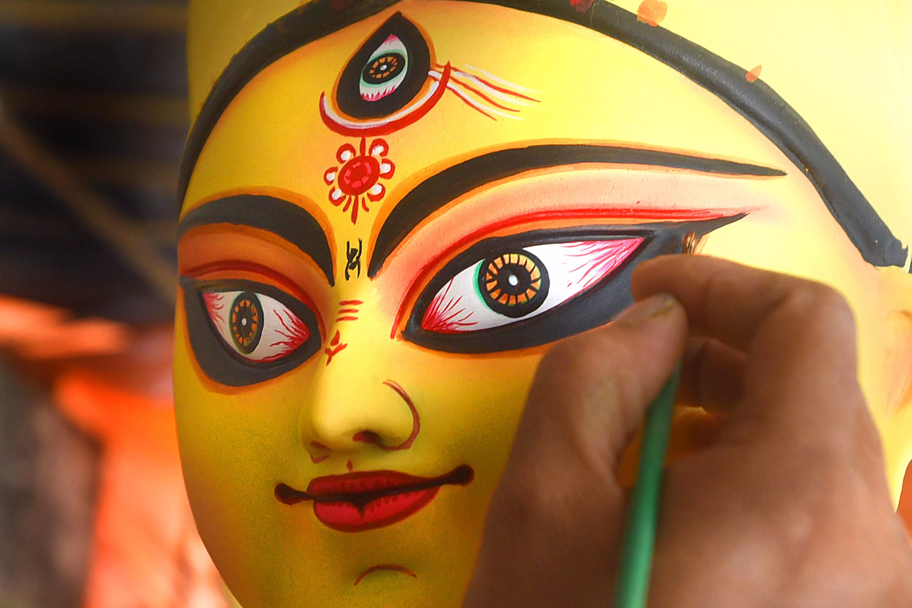

DURGA PUJA
Durga Puja, or Durgotsav or Autumn festival is celebrated in the Indian subcontinent and South Asia It is an annual Hindu festival celebrated in which the Hindu goddess Durga is worshipped. [3] In this six daysMahalaya is celebrated as Shashthi , Maha Saptami , Maha Ashtami , Maha Navami and Vijayadashami . The dates of Durga Puja are celebrated according to the traditional Hindu calendar and the fortnight associated with this festival is known as Devi Paksha , Devi Pakhwada . [4]
The festival of Durga Puja is celebrated as the victory of the Hindu goddess Durga over the evil demon Mahishasura . [5] Hence the festival of Durga Puja is also considered as the victory of good over evil.

It is widely celebrated in the Indian states of West Bengal , Assam , Bihar , Jharkhand , Manipur , Odisha and Tripura , where there is a five-day annual holiday at this time. [7] It is considered the biggest festival of the year in West Bengal, Assam, Tripura, areas dominated by Bengali Hindus and Assamese Hindus. It is not only the biggest Hindu festival, but it is also the most important socio-cultural festival in the Bengali-Assamese-Odia Hindu society. Durga Puja celebrated in Delhi , Uttar Pradesh , Maharashtra , Gujarat , Punjab apart from western IndiaIt is celebrated all over India including Kashmir , Andhra Pradesh , Karnataka , Kerala . The festival of Durga Puja is also celebrated as a major festival in Nepal with 91% Hindu population and Bangladesh with 8% Hindu population.

Presently, various expatriate Assamese and Bengali cultural organizations organize it in various countries including United States of America, Canada, United Kingdom, Australia, Germany, France, Netherlands, Singapore and Kuwait. In the year 2006, the festival of Vishwaal Durga Puja was organized in the British Museum . [8]
The fame of Durga Puja gradually increased in Bengal and former Assam during the British Raj. [9] Hindu reformers introduced Durga to India and made it a symbol of Indian independence movements.
In December 2021, Durga Puja of Kolkata was included in the list of UNESCO 's intangible cultural heritage . [10]